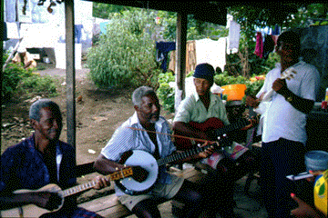
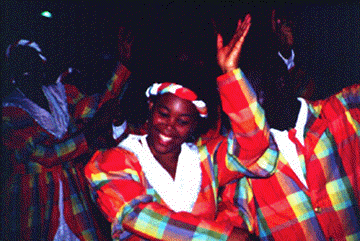

HOME FUNDEF
Plan Caribe
Temas Estudiados


En los proyectos de la primera fase del Plan se registraron los siguientes
temas:
- Cantos
- Folklóricos (folksongs)
- En inglés y en
créole
- De trabajo (pescadería, etc.)
- Calypso y Ex-Tempo
- La tradición de los Ironband y Steelband (bandas de
hierro y acero).
- Celebraciones especiales:
- Festivales de Flores La Rose y La
Marguerite (Sta. Lucía)
- Bodas con música Kwe-kwe y
Yama Pele (Guyana)
- Música festiva, callejera, parranda y de carnaval
- Música religiosa:
- Shangó (en Grenada y Trinidad)
- Big Drum (en Carriacou y Union)
- Komfó (en Guyana)
- Himnos cristianos recopilados por Ira Sankey
- Tambores de raíz africana:
- Big Drum
- Shangó
- Komfó
- Nuevos experimentos con tambores
- Música religiosa de los hindúes (Guyana)
- Cantos de
devoción (bhajans)
- Tambores para los cultos a Kali-Mai
- Conjuntos instrumentales:
- Stringband
- Fife-band
- Quadrille-band
- Jing-Pingband
- Música popular:
- Calypso
- Zouk
- Reggae
- Jump-Up
- Música "de proyección":
- Coros con repertorio de
cantos folklóricos arreglados para dos o más voces
- Canciones de
iglesia en creole (Dominica)